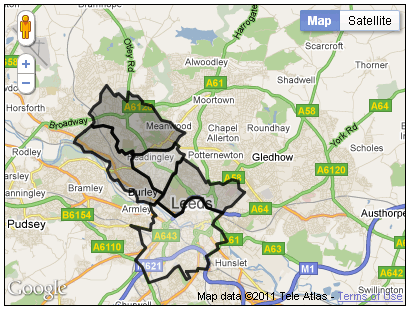

The previous section illustrated the use of polygons by adding two simple polygons to the map. However, the polygons provided no extra functionality, and were both shaded in the same way. By shading polygons in different colours, we can add thematic meaning to the map, as we did with differential shading of lines. We can also present further information by adding information to be included on a pop-up window. The following figure shows the code of a revised polygon example; this uses the same data file as the previous example.
This example adds a function for adding polygons to the map that is similar
to the function used to add multiple markers. The function is called addPoly(),
and it takes as its parameters an array of LatLng points
(polyPath), some text to be used for an info window, a line colour
and a fill colour. Again, we have to use a callback function to make sure that
we get distinct infowindows for each polygon, however the function used is
slightly different to that used in the markers example (and thus should really
have been given a different name!). Infowindows can be attached to markers, or
to any given LatLng point on the map; they cannot be attached in a general
manner to a polygon: we have to say where we want them to pop up.
We can do this by setting the position parameter of the
infowindow object. Here we have used the first point in our polygon
(polyPath[0]), although a more appealing placement would probably
require us to iterate through all points and calculate a centroid. Given that
the position is set, we do not need to supply a marker reference to the
callback function.
var map; // The map object
var myPoly;
var myCentreLat = 53.81;
var myCentreLng = -1.52;
var initialZoom = 12;
// infocallback for info windows
function infoCallback(infowindow) {
return function() {
infowindow.open(map);
};
}
/*
* addPoly
*/
function addPoly(polyPath,myInfo,line_colour,fill_colour) {
/*
* Construct the polygon
*/
myPoly = new google.maps.Polygon({
paths: polyPath,
strokeColor: line_colour,
strokeOpacity: 0.8,
strokeWeight: 3,
fillColor: fill_colour,
fillOpacity: 0.35
});
var infowindow = new google.maps.InfoWindow({
content: myInfo,
position: polyPath[0]
});
google.maps.event.addListener(myPoly, 'click', infoCallback(infowindow));
myPoly.setMap(map);
}
function initialize() {
var myCentre = new google.maps.LatLng(myCentreLat,myCentreLng);
var myOptions = {
zoom: initialZoom,
center: myCentre,
mapTypeId: google.maps.MapTypeId.ROADMAP
};
map = new google.maps.Map(document.getElementById("map_canvas"),myOptions);
for (id in os_polydata) {
var polyPath = []; // An empty array
/*
* Read through points
*/
var thisBoundary = os_polydata[id].boundary;
for (pt in thisBoundary) {
var osPt = new OSRef(thisBoundary[pt].easting,thisBoundary[pt].northing);
var llPt = osPt.toLatLng(osPt);
llPt.OSGB36ToWGS84();
var myLatLng = new google.maps.LatLng(llPt.lat,llPt.lng);
polyPath.push(myLatLng);
}
var fillShade = 256*(os_polydata[id].value/100);
var fillShadeHex = parseInt(fillShade).toString(16);
var fillColour = '#'+fillShadeHex+fillShadeHex+fillShadeHex;
var info = "<div><h1>" + os_polydata[id].title
+ "</h1><p>" + os_polydata[id].description
+ "</p></div>";
addPoly(polyPath,info,"#000000",fillColour);
}
}
The setup file also illustrates the dynamic generation of a fill shade from
a value read from the data file (in this case,
os_polydata[id].value). First , we convert the value into a number
between 0 and 256. The example above assumes that all values are in the range 0
to 100. We then convert this to a hexadecimal number: we use the builtin
JavaScript function parseInt() to convert fillShade
to an integer, and then run the method toString(16) on the result
of parseInt(). The method toString() converts a
number to a string. It can take an optional radix (base) value as a parameter;
hexadecimal is base 16, so using toString(16) converts a numeric value to a
string containing a hexadecimal version of that number. Finally, we construct a
string called fillColour as a standard Google Maps colour reference: a '#' plus
three hex values for red, green and blue. Here we have used the same value for
red, green and blue, so we will get a variable shade of grey.
Having calculated a fill colour, we call our addPoly() function for each polygon.
The code in the figure above is relatively simple - it creates only shades of grey,
and as mentioned, it assumes that the attribute term will vary between 0 and
100.Some basic error correction for values outside this range is included.
The variable fillValue is used as a
term to determine the shading level, and is iitially set as a copy of the raw
data value. If this value is less than 0 or greater than 100, it is modified
to be 0 or 100 respectively. However, a better approach would be to have a
preparatory loop that reads through the data file and determines the range of
the shading variable, and then sets the shading accordingly.
var os_polydata = [
{
'title': 'Kirkstall',
'description': '08DAFR',
'value': 27,
'boundary': [
{'easting':424937.406702199,'northing': 437355.594025358},
{'easting':425253.500142493,'northing': 437616.812329601},
{'easting':425343.187182577,'northing': 437517.593897509},
{'easting':425753.812206959,'northing': 437609.499945594},
{'easting':426193.406191368,'northing': 437497.90647349},
{'easting':426149.000431327,'northing': 437284.687145292},
{'easting':426434.000111593,'northing': 436914.812200947},
{'easting':426354.499823518,'northing': 436667.999528717},
{'easting':426469.593327626,'northing': 436420.281640487},
{'easting':426607.312111754,'northing': 436494.812456556},
{'easting':426763.000047899,'northing': 436317.593896391},
{'easting':427104.000240217,'northing': 436471.312680534},
{'easting':427125.687536237,'northing': 436375.312680445},
{'easting':427039.812848157,'northing': 436340.687144413},
{'easting':427186.000112293,'northing': 436297.499944372},
{'easting':427056.906480173,'northing': 436077.094184167},
{'easting':427119.687920231,'northing': 435708.093735823},
{'easting':427820.687600884,'northing': 435260.500263407},
{'easting':428024.592625074,'northing': 434796.093734974},
{'easting':428505.687281522,'northing': 434549.687590744},
{'easting':428096.906481141,'northing': 434024.187174255},
{'easting':427612.593392690,'northing': 434195.312934414},
{'easting':427315.093744413,'northing': 434180.687142401},
{'easting':427323.906288421,'northing': 434343.187750552},
{'easting':427155.999984265,'northing': 434714.500390898},
{'easting':426998.499568118,'northing': 434630.40643882},
{'easting':426748.812527886,'northing': 434694.593830879},
{'easting':426432.844015591,'northing': 435168.656679321},
{'easting':426276.312303446,'northing': 435118.312743274},
{'easting':426101.093615282,'northing': 435268.406567414},
{'easting':425949.781231142,'northing': 435610.500391732},
{'easting':426075.812079259,'northing': 435800.499495909},
{'easting':426049.687791235,'northing': 435984.687400081},
{'easting':425899.312367095,'northing': 436006.593832101},
{'easting':425253.812462493,'northing': 436409.000232476},
{'easting':424902.094062166,'northing': 436409.093416476},
{'easting':424774.906094047,'northing': 436665.499944715},
{'easting':424453.312749748,'northing': 436835.093800873},
{'easting':424557.812973845,'northing': 437049.499945073},
{'easting':424937.406702199,'northing': 437355.594025358}]
},
{
'title': 'Weetwood',
'description': '08DAGG',
'value': 12,
'boundary': [
{'easting':428588.310769599,'northing': 436488.17488855},
{'easting':427825.078512888,'northing': 436514.798888575},
{'easting':427480.093936567,'northing': 436298.187048373},
{'easting':427080.406256195,'northing': 436298.687784373},
{'easting':427104.000240217,'northing': 436471.312680534},
{'easting':426763.000047899,'northing': 436317.593896391},
{'easting':426607.312111754,'northing': 436494.812456556},
{'easting':426500.312303654,'northing': 436394.500392462},
{'easting':426354.499823518,'northing': 436667.999528717},
{'easting':426434.000111593,'northing': 436914.812200947},
{'easting':426149.000431327,'northing': 437284.687145292},
{'easting':426193.406191368,'northing': 437497.90647349},
{'easting':425753.812206959,'northing': 437609.499945594},
{'easting':425296.000238533,'northing': 437540.21917753},
{'easting':425253.500142493,'northing': 437616.812329601},
{'easting':425355.000046588,'northing': 437751.500073726},
{'easting':425279.398126517,'northing': 437987.673385946},
{'easting':425116.593390365,'northing': 438137.312554086},
{'easting':425330.406638565,'northing': 438450.719018377},
{'easting':425620.094190834,'northing': 438671.094058583},
{'easting':425642.186990855,'northing': 439044.906282931},
{'easting':425905.313007100,'northing': 439419.78141928},
{'easting':426246.593775418,'northing': 438970.593578862},
{'easting':426331.187439497,'northing': 438930.280746824},
{'easting':426329.906415496,'northing': 439020.905770909},
{'easting':426453.093615610,'northing': 439048.187178934},
{'easting':426837.093615968,'northing': 438700.905770611},
{'easting':426888.312048016,'northing': 439131.291947011},
{'easting':427088.000240202,'northing': 438942.593322836},
{'easting':427312.812272411,'northing': 438946.594090839},
{'easting':427545.687280628,'northing': 438691.093802601},
{'easting':427525.000432609,'northing': 438599.812394516},
{'easting':427944.093936999,'northing': 438520.812842443},
{'easting':428393.406705417,'northing': 437860.187433828},
{'easting':428799.312113795,'northing': 437770.313001744},
{'easting':429095.405810071,'northing': 437457.312041452},
{'easting':429461.999858413,'northing': 437295.094057301},
{'easting':429220.593906188,'northing': 437129.312553147},
{'easting':428915.500273904,'northing': 436631.218472683},
{'easting':428588.310769599,'northing': 436488.17488855}]
},
{
'title': 'City and Holbeck',
'description': '08DAFH',
'value': 93,
'boundary': [
{'easting':429562.687730506,'northing': 431042.406691478},
{'easting':429717.312754650,'northing': 430761.999651217},
{'easting':429567.094002511,'northing': 430677.687587138},
{'easting':429214.593266182,'northing': 431303.999779722},
{'easting':429020.093682001,'northing': 431191.405859617},
{'easting':428678.781169683,'northing': 430801.218851254},
{'easting':427864.406256925,'northing': 430527.499554999},
{'easting':427553.905904635,'northing': 431239.312675662},
{'easting':427250.594032353,'northing': 431537.312035939},
{'easting':427716.499696787,'northing': 432110.187812473},
{'easting':427565.593840646,'northing': 432273.187108624},
{'easting':427419.312368510,'northing': 432894.000421202},
{'easting':427022.405872140,'northing': 433102.718245397},
{'easting':427928.593648984,'northing': 432889.499941198},
{'easting':427947.812081002,'northing': 433170.28074146},
{'easting':428078.405873124,'northing': 433261.187365544},
{'easting':428015.187185065,'northing': 433437.312293708},
{'easting':428082.312433128,'northing': 433560.812837823},
{'easting':428181.812465220,'northing': 433542.906149807},
{'easting':427973.999857027,'northing': 433779.406118027},
{'easting':427899.000048957,'northing': 434093.499686319},
{'easting':428096.906481141,'northing': 434024.187174255},
{'easting':428196.187377234,'northing': 434190.09360641},
{'easting':429037.499634017,'northing': 433532.999973798},
{'easting':429369.906418327,'northing': 433737.000229988},
{'easting':429461.312754412,'northing': 434090.093862316},
{'easting':429607.093490548,'northing': 434279.405862493},
{'easting':430017.400050930,'northing': 434417.500454621},
{'easting':430293.812467187,'northing': 434301.812006514},
{'easting':430468.406515350,'northing': 433935.281446172},
{'easting':431195.187444027,'northing': 433696.71914195},
{'easting':430802.499827661,'northing': 433344.594213622},
{'easting':430740.906227604,'northing': 433151.094053442},
{'easting':431137.406195973,'northing': 432875.000101185},
{'easting':431394.594036213,'northing': 432411.000100753},
{'easting':430918.312179769,'northing': 432293.187876643},
{'easting':430998.687987844,'northing': 432072.499492437},
{'easting':430451.948787334,'northing': 431733.817636122},
{'easting':430573.687027448,'northing': 431419.187491829},
{'easting':430482.093299363,'northing': 431150.093603578},
{'easting':430083.687666992,'northing': 431188.593955614},
{'easting':430056.593650966,'northing': 431070.093603504},
{'easting':429562.687730506,'northing': 431042.406691478}]
},
{
'title': 'University',
'description': '08DAGF',
'value': 45,
'boundary': [
{'easting':429531.219186477,'northing': 436038.312232131},
{'easting':430048.093426958,'northing': 435681.406247798},
{'easting':430425.312499310,'northing': 435045.405991206},
{'easting':430532.406515409,'northing': 435145.187623299},
{'easting':430613.999859485,'northing': 434975.499559141},
{'easting':431034.093811877,'northing': 435060.09424722},
{'easting':431190.406388022,'northing': 434975.187239141},
{'easting':431574.531316380,'northing': 435197.843751348},
{'easting':431881.999604666,'northing': 435142.312231296},
{'easting':431912.500468695,'northing': 434810.281254987},
{'easting':432177.187060941,'northing': 434623.406374813},
{'easting':431578.406132384,'northing': 434002.312486235},
{'easting':431335.777524158,'northing': 433927.770406165},
{'easting':431195.187444027,'northing': 433696.71914195},
{'easting':430468.406515350,'northing': 433935.281446172},
{'easting':430209.687795109,'northing': 434368.687398576},
{'easting':429791.499506720,'northing': 434387.188006593},
{'easting':429491.187954440,'northing': 434143.094054366},
{'easting':429369.906418327,'northing': 433737.000229988},
{'easting':429037.499634017,'northing': 433532.999973798},
{'easting':428210.312433247,'northing': 434182.281510402},
{'easting':428474.593521493,'northing': 434435.093798638},
{'easting':428884.187377874,'northing': 435353.499943493},
{'easting':429054.276850033,'northing': 435491.319079621},
{'easting':429119.187186093,'northing': 435970.312488068},
{'easting':429223.500018190,'northing': 435939.687720039},
{'easting':429345.406194304,'northing': 436164.906280249},
{'easting':429531.219186477,'northing': 436038.312232131}]
},
{
'title': 'Headingley',
'description': '08DAFN',
'value': 67,
'boundary': [
{'easting':428573.898993585,'northing': 434715.399462899},
{'easting':428505.687281522,'northing': 434549.687590744},
{'easting':428024.592625074,'northing': 434796.093734974},
{'easting':427820.687600884,'northing': 435260.500263407},
{'easting':427119.687920231,'northing': 435708.093735823},
{'easting':427056.906480173,'northing': 436077.094184167},
{'easting':427186.000112293,'northing': 436297.499944372},
{'easting':427545.312496628,'northing': 436310.187304384},
{'easting':427825.078512888,'northing': 436514.798888575},
{'easting':428732.687601733,'northing': 436505.687336566},
{'easting':428915.500273904,'northing': 436631.218472683},
{'easting':428999.785713982,'northing': 436842.75741688},
{'easting':429196.593394165,'northing': 436686.812456735},
{'easting':429106.999538082,'northing': 436578.187560634},
{'easting':429240.500466206,'northing': 436392.218920461},
{'easting':429444.312306396,'northing': 436317.09418439},
{'easting':429281.593586245,'northing': 435994.09488809},
{'easting':429119.187186093,'northing': 435970.312488068},
{'easting':429054.276850033,'northing': 435491.319079621},
{'easting':428943.187185929,'northing': 435455.312167588},
{'easting':428573.898993585,'northing': 434715.399462899}]
}
]
The co-ordinates were derived in a fairly lengthy manual manner: the polygon
data were derived from a set of polygon boundaries downloaded from UKBorders (although fortunately, there
are easier ways than this of converting polygon data). The MIF form presents
the polygons as a series of easting, northing pairs, with one pair per
line. For a relatively small set of wards such as this, it was possible to
then edit the resulting file manually, to prefix each line with "{'easting': " and to add other bits of text
as required. However, this is time consuming and is clearly not a suitable
approach for larger amounts of data. The other properties (the title,
description, and fill colour) was added manually for each polygon.

The output of this example is shown above. For the sake of simplicity, the polygons have been shaded in various intensities of grey. It would of course be quite easy to work out different red, green and blue values, in order to use colours.
Whilst polygons are useful, there are limits on how many can be added to a map before it becomes unwieldy (slow to load and respond to clicks).
The files used for these polygon examples are available here: